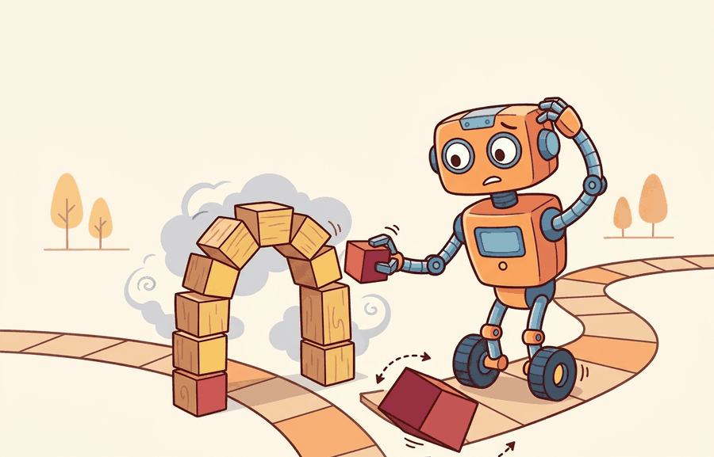

A second robot is not a free performance upgrade; it is also a second opinionated body in the hallway.
A Hallway with Two Robots

One agent vs. many is the agent boundary design lens for multi-agent embodied AI. A single-agent formulation hides teammates inside the environment. A multi-agent formulation exposes who observes what, who can act, and whose reward changes when another body moves.
one agent vs. many becomes useful when it is tied to a named interface, a replayable scenario, a failure diagnostic, and an artifact that records what changed in the action loop.
The key question is practical: Should the task be modeled as one centralized controller, several decentralized agents, or a hybrid with centralized training and decentralized execution?
A representation earns its place when it changes the measurable action interface. In one agent vs. many, the reader should keep asking which decision becomes easier, safer, or more reliable.
Theory
Before choosing a formulation, consider the cost of getting it wrong in each direction. Treating a multi-robot task as a single agent hides every inter-robot dependency inside the environment model: the policy cannot reason about a teammate's delay, cannot request information it does not automatically receive, and cannot recover gracefully when one body is removed. Going the other way, decomposing a naturally centralized task into many decentralized agents introduces coordination overhead, message latency, and the possibility that no single agent holds enough context to make a safe local decision. The formulation choice is not cosmetic; it determines which failures are visible at training time and which ones only surface during deployment.
For One agent vs. many, the practical design rule is to make the interface inspectable before optimization begins: inputs, outputs, units, latency, bounds, and failure labels should all be visible in the saved artifact.
The mechanism in One agent vs. many is the contract between representation and action. Name what enters the module, what leaves it, which assumptions make that transformation valid, and which log would reveal a bad handoff.
Worked Example
Consider two mobile manipulators clearing a table. One robot can see the cups, the other can reach the tray, and both can block the same narrow aisle. The important object is not just a policy; it is the joint state, the communication budget, and the deadlock recovery rule.
The hand-built dataclass is roughly 12 lines and only names the interface. In practice, use PettingZoo for multi-agent environment APIs and ROS 2 for robot messages; those tools handle agent ordering, observation dictionaries, message schemas, and reproducible resets while the hand-built version remains useful for debugging the boundary.
Practical Recipe
- Write the observation, action, and success metric before choosing a model.
- Build a baseline that is simple enough to debug by inspection.
- Add the library implementation only after the baseline behavior is understood.
- Record failures as structured cases: perception error, state error, planning error, control error, or evaluation error.
- Run at least one perturbation test before trusting the result.
The common mistake in One agent vs. many is to celebrate the component score before checking the closed-loop handoff. The failure usually appears at the boundary: stale state, wrong frame, delayed action, saturated actuator, or metric that ignores the real task cost.
A team moving from one robot to many should log each agent observation, local action, received message, arbitration decision, and final team metric. The log reveals whether coordination improved the task or only moved errors from planning into communication.
Current multi-agent embodied work studies decentralized execution, emergent communication, language-mediated coordination, and simulator-to-robot transfer. Treat strong demos as frontier watch items until the team evaluation reports task panels, partner variation, seeds, and failure taxonomy.
A notable 2022 result is HAPPO (Kuba et al., ICLR 2022), which extends the trust-region policy update to heterogeneous cooperative multi-agent settings. HAPPO proves a monotonic improvement theorem for the joint team policy by sequentially updating agents in a principled order, guaranteeing each step does not decrease the team objective. This matters for embodied teams because agents typically have different observation spaces, action sets, and roles, a setting where earlier MARL methods lacked theoretical guarantees.
Can you name the observation, state estimate, action, success metric, and most likely failure mode for one agent vs. many? If not, the system boundary is still too vague.
One agent vs. many becomes useful when it is tied to a closed-loop contract for Multi-Agent Embodied AI. The contract names the participants, observations, action authority, timing budget, logging artifact, and recovery rule. Without that contract, a system can look capable in a notebook while failing the first time a partner delays, a person corrects it, or a deployment scene changes.
For One agent vs. many, separate the conceptual claim, the systems claim, and the evidence claim. A plausible mechanism, a clean interface, and a closed-loop result are different claims; the section should keep their evidence separate.
| Tool or Library | Role in the Topic | Builder Advice |
|---|---|---|
| PettingZoo | One agent vs. many | Standardize multi-agent environment interfaces and compare turn-based with parallel interaction. |
| Gymnasium | One agent vs. many | Keep single-agent baselines available before adding teammates or opponents. |
| ROS 2 | One agent vs. many | Move team messages, robot state, and safety events through typed topics and services. |
| MuJoCo | One agent vs. many | Prototype contact-rich robot interactions before running real hardware. |
| LeRobot | One agent vs. many | Reuse robot datasets and policies when team behavior depends on demonstrations. |
For One agent vs. many, the baseline and maintained-tool version should produce the same artifact schema and run on one task panel. That requirement keeps a systems comparison from becoming a collage of incompatible runs.
- Write a one-paragraph task contract with observation, action, success, and failure fields.
- Start with the smallest simulator, dataset, or wrapper that exposes the task contract faithfully.
- Run one deterministic smoke test and one perturbation test before scaling.
- Save a single result artifact containing configuration, seed, metrics, videos or traces, and failure labels.
- Compare methods only when one script evaluates them on the same task panel.
When One agent vs. many fails, avoid labeling the whole method as weak. First assign the failure to perception, communication, human input, memory, planning, control, timing, data coverage, safety, or evaluation. Then rerun one controlled perturbation that isolates the suspected cause. This pattern turns a disappointing rollout into a reusable diagnostic asset.
Agent Checklist Applied
The 42-agent production pass treats one agent vs. many as a buildable system, not a definition. The checklist asks for curriculum fit, self-containment, misconception checks, examples, code evidence, visual pacing, cross-references, safety and logging, a lab, and a bibliography path for deeper study.
For One agent vs. many, connect the agent-environment boundary, Gymnasium or PettingZoo interface, RL objective, hierarchy, and evaluation artifact through one multi-agent interaction log.
A common misconception is that adding agents automatically adds capability. The diagnostic question is: if one agent is removed or delayed, does the remaining policy degrade gracefully or does the team reveal hidden single-point dependence?
Create a two-agent grid or tabletop sketch with one shared bottleneck. Compare a centralized action table with two local policies that exchange one-bit intent messages.
A second robot is not a free performance upgrade; it is also a second opinionated body in the hallway.
Technical Core
One agent vs. many needs a topic-native core: variables, equations or system contracts, an algorithmic procedure, an expected output, and a failure diagnosis. Figure 49.1.T summarizes the chain this section must preserve when moving from a teaching example to a real embodied system.
$J(\Pi)=\mathbb E\!\left[\sum_{t=0}^{T-1}\gamma^t r(s_t,a_t)\right],\quad \Pi=\{\pi_1,\ldots,\pi_n\},\quad a_t^{\mathrm{joint}}=[a_t^1,\ldots,a_t^n]$
Choosing one agent versus many is a factorization decision. A centralized policy $\pi(a^{\mathrm{joint}}\mid o)$ can coordinate globally but grows with the joint action space. A decentralized family $\{\pi_i(a_i\mid o_i,m_i)\}$ scales better and matches physical deployment, but it only works if local observations and messages preserve the action-critical information.
- Write the task graph: bodies, actuators, communication links, and shared bottlenecks.
- Measure whether the joint action is low-rank, for example by checking whether a small message or latent variable predicts most coordination choices.
- Train or hand-code one centralized baseline and one decentralized baseline on the same environment seeds.
- Compare task return, message rate, wall-clock latency, and graceful degradation when one agent is delayed or removed.
| Question | Centralized Answer | Multi-Agent Answer |
|---|---|---|
| Who sees the full scene? | One planner fuses all observations. | Each robot sees a partial slice and may share summaries. |
| Where does latency hurt? | At the single planner and network uplink. | At local message passing and arbitration points. |
| What failure is easiest to miss? | Single point of failure in the planner. | Hidden dependence on one informative teammate. |
| What metric matters beyond reward? | End-to-end compute and recovery time. | Partner substitution, coordination cost, and loss after dropout. |
Three concrete conditions favor a multi-agent formulation. First, when the joint action space grows exponentially with the number of bodies (for example, four robots each with 6-DOF arms produce a 24-dimensional joint action that no single policy trains efficiently). Second, when communication bandwidth or latency between bodies is constrained, meaning a centralized planner cannot receive full state and issue commands within the control cycle. Third, when the deployment requires graceful degradation: a decentralized team can continue operating if one agent fails or disconnects, whereas a centralized controller creates a single point of failure. If none of these conditions hold, a single centralized policy is usually simpler to train, easier to debug, and less likely to hide coordination failures inside message-passing logic.
# Audit whether decentralized execution preserves the key coordination decision.
# Expected: coordination is robust only if the summary message tracks the bottleneck.
episodes = [
{"planner": "centralized", "success": 0.96, "latency_ms": 82, "dropout_success": 0.94},
{"planner": "decentralized", "success": 0.92, "latency_ms": 24, "dropout_success": 0.61},
]
for row in episodes:
gap = round(row["success"] - row["dropout_success"], 2)
print(row["planner"], "coordination_gap", gap, "latency_ms", row["latency_ms"])centralized coordination_gap 0.02 latency_ms 82 decentralized coordination_gap 0.31 latency_ms 24
The output is the interpretation step, not decoration. The decentralized system is faster, but its coordination gap is much larger, which means the factorization discarded action-critical context. In practice this suggests a hybrid design, such as centralized training with decentralized execution, a shared world model, or a tighter intent message.
A one-versus-many design fails when a team is declared modular even though one robot silently carries the global plan. The diagnostic is an ablation that removes or delays that robot and checks whether the others can still produce coherent joint behavior.
One agent vs. many is useful when it exposes coordination contracts that a single-agent formulation would hide.
Design a method-matched experiment for One agent vs. many. Specify the environment, observation schema, action interface, metric, and one perturbation that targets the section's core assumption.
Section References
Lowe, R. et al. Multi-Agent Actor-Critic for Mixed Cooperative-Competitive Environments. NeurIPS, 2017.
Use for centralized-training, decentralized-execution baselines and communication or coordination failure analysis.
Terry, J. K. et al. PettingZoo: Gym for Multi-Agent Reinforcement Learning. NeurIPS Datasets and Benchmarks, 2021.
Use for maintained multi-agent environment interfaces and reproducible API-level examples.